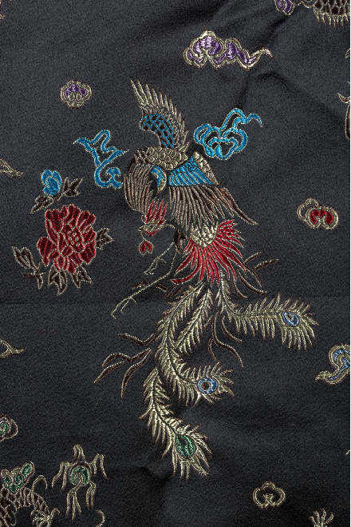
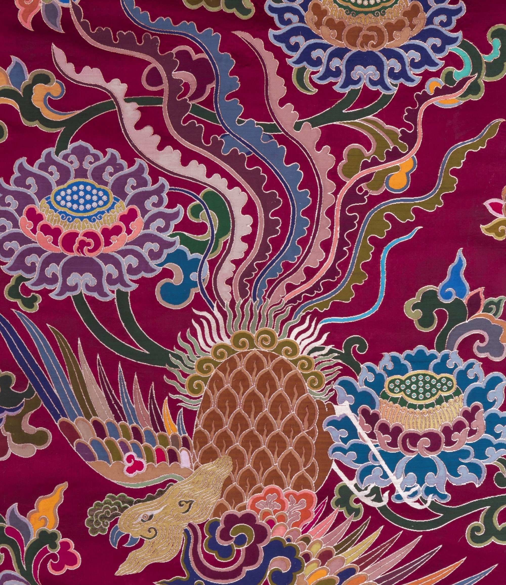

龙的形象是驼头、蛇身、蜥腿、鹰爪、蛇尾、鹿角、鱼鳞、牛耳、口角有须、额下有珠，身上还附有火云。它是九五之尊的象征，拥有五爪。帝王、帝后服饰上的龙，大多通身五彩祥云，脚踏江崖海水，显得威仪生动。龙纹在衣饰图纹中主要有团龙纹、行龙纹和正龙纹三种形式。
凤纹融合了锦鸡、鹦鹉、仙鹤、鸵鸟和孔雀等多种鸟类特征，被视为象征光明、幸福、智慧和美好的神鸟，寄托着对美好生活的向往。清代的凤纹在延续明代造型的基础上更添华丽，与牡丹结合成“凤穿牡丹”图案，寓意幸福美满；与百鸟相聚则形成“百鸟朝凤”景象，象征和谐尊贵。凤纹的丰富装饰与深厚寓意，不仅代表皇后嫔妃的高贵身份，也展现了广绣中独具特色的吉祥主题。


云锦时代
Copyright© 2024 All Rights qing.
智绘云锦实践项目组
地址：南京江宁科学园龙眠大道629号 邮编：211188 电话:888-888888